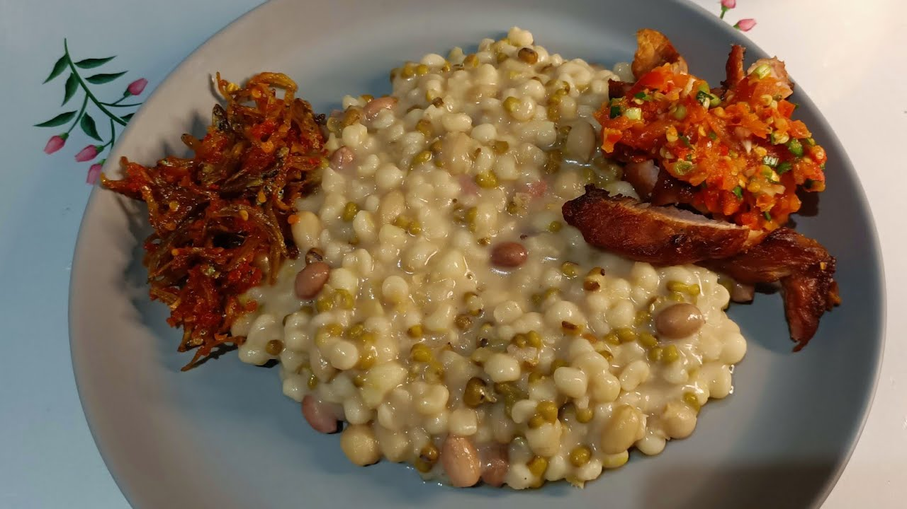
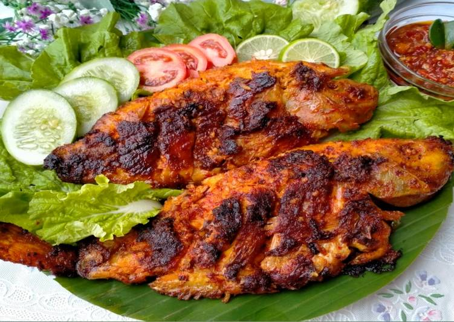
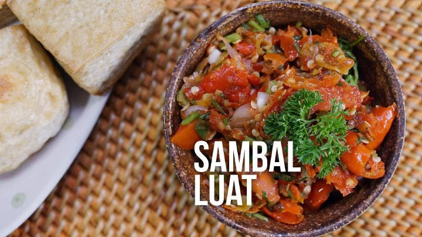

Nikmati cita rasa makanan khas Alor yang lezat.

Makanan khas Nusa Tenggara Timur yang dibuat dari jagung dan kacang-kacangan.

Ikan segar hasil laut Alor yang dibakar dengan bumbu khas.

Sambal khas NTT yang memiliki rasa pedas dan segar.